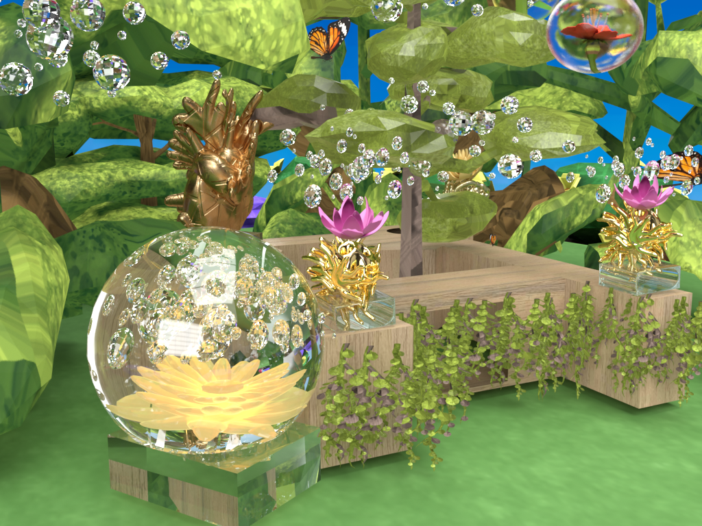
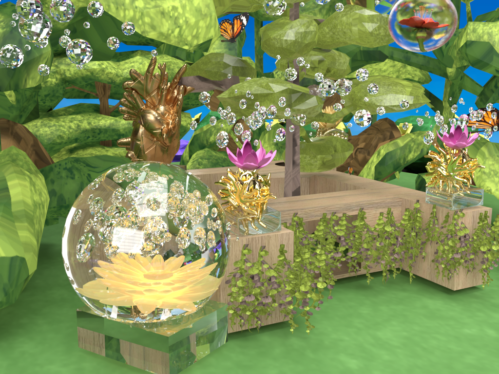

Crossing on Foliage is my desire to create my own utopian world. This world was inspired by the video game series, "Animal Crossing". I was captivated with their vibrant aspect that encompasses the bright and postive emotions. By creating a natural and rural space of what I called "Crossing on Foliage", I envision the preservation of the greenery by bringing out the beauty of flowers covered in frost in sunflower, aloe vera, and hibiscus flower. As well as displaying a glass-like sculptures to focus on the environmental aesthetics. My purpose of this exhibtion is not just about capturing the aesthetics of my utopian world, but to encapsulate the synergistic energy of healing towards self-awareness. With reflective mirrors and glass invokes the transparency of self reflection.